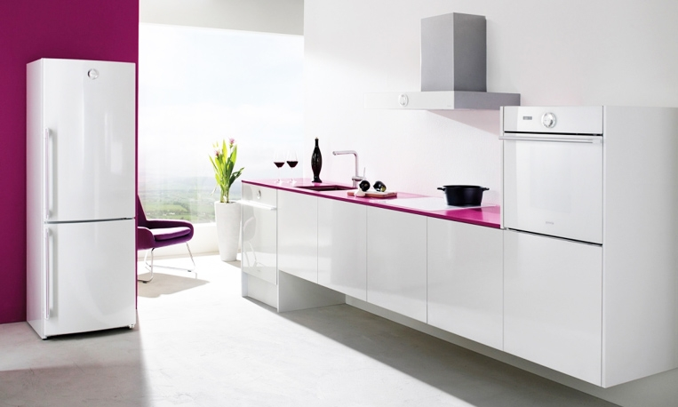
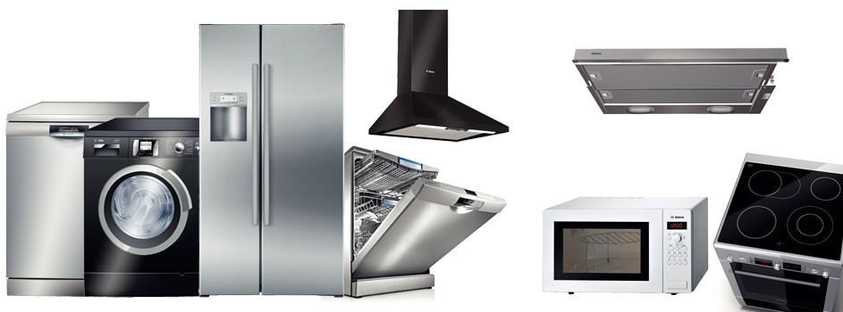
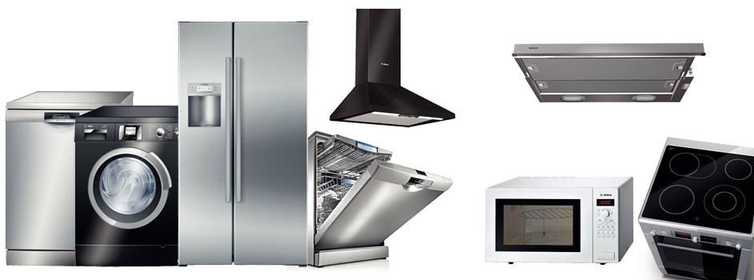
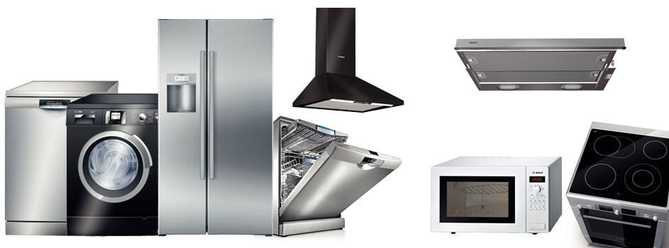

 


Hotpoint-Ariston teknik servisi olarak size çok özel servis hizmeti veriyoruz. Hizmetlerimiz içinde arıza tamiri, onarım, bakım, güvenilir servis, hızlı ulaşım öne çıkmaktadır. Orijinal yedek parça ve aksesuarları ucuz fiyata yetkili servisimizden temin edebilirsiniz. Teknik servis çağrı merkezini arayıp servis talep ettikten çok kısa bir süre içerisinde bulunduğunuz adrese gelecektir. Servis Talebi için Online Talep Forumu'nu doldurabilir veya 0312 322 52 52 ve 0532 543 86 96 numaralı telefonumuzu arayabilirsiniz.
Ariston Çamaşır Makinesi Servisi
Ariston Bulaşık Makinesi Servisi
Ariston Buzdolabı Servisi
Ariston teknik servisi olarak beyaz eşya ve Kombilerinizin bütün tamir işlemlerini eksiksiz ve kusursuz bir şekilde gerçekleştirmekteyiz. Tamir ve bakımlarınızı mutlaka alanında tecrübeli kişilere yaptırmanız gerekmektedir. Unutmayınız!
Profesyonel Bakım Hizmetleri: Ariston marka cihazlarınız kullanma koşulları ve sıklığı paralelinde zamanla performans düşüklüğü yaşanması olası bir durumdur. Teknik servisimize düzenli olarak yaptırdığınız bakım işlemleri sayesinde ise bu sorunlarla karşılaşmadan, cihazlarınızı uzun vadede sorunsuz ve verimli bir şekilde kullanabilirsiniz.
Ariston Cihazlarınızı Güvenilir Ellere Emanet Edin: Ariston teknik servisimizde tamir işlemlerini gerçekleştiren bütün personelimiz gerekli belgelere ve tecrübeye sahip, anında çözüm üreten, aktif kişilerdir. Cihazlarınızda oluşan arızalanmaları geniş ve donanımlı araç filolarımızla büyük sorunlar olmaması halinde yerinde, sorun büyükse ise servis alanlarımızda tamir etmekteyiz. Zamanınızı ve bütçenizi düşünen servisimiz uygun fiyatlar ve cazip ödeme seçeneklerimizle en kısa zamanda tamir işlemlerinizi gerçekleştirecektir. TSE belgeli hizmet noktalarımız 7/24 teknik servis hizmeti ile işçilik ve yedek parça garantisi vermektedir.
Orijinal, Garantili Yedek Parça ve Aksesuar: Servisimiz depolarında bulunan bütün Ariston yedek parça ve aksesuarları orijinal ürünler olup geniş ürün yelpazelerimizle bütün ihtiyaçlarınızı en kısa sürede gidermekteyiz.
Kaliteli Hızlı ve Güvenilir Servis Hizmeti: Garanti kapsamından çıkmış cihazlarınızın her türlü bakım ve onarım işlemlerinde sizlere gerekli indirim ve ödeme kolaylıkları sunarak kaliteyi ucuza sunmanın ve sizi mutlu görmenin gururunu yaşıyoruz. Çünkü memnuniyetiniz memnuniyetimizdir.
Yenimahalle teknik servisi olarak Ariston ve İndesit marka cihazlarınızın tamir bakım onarım işleriniz yapılır Yenimahalle Ariston kombi tamiriniz itina ile yapılır
Ariston Servisi - Ariston Teknik servisi - Ariston Çamaşır makinası tamiri Ariston Bulaşık makinası - Ariston Kombi - Ariston Kombi tamiri Ariston Buzdolabı tamiri - Ariston Yedek parça - İndesit Servisi indesit Çamaşır makinası tamiri - indesit Bulaşık makinası Hotpoint Ariston İndesit Servisi - İndesit Buzdolabı Tamiri uzman kadrolarımızda zamanında ve hızlı bir şekilde giderilir.